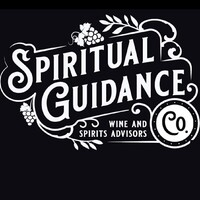

Helping wine, spirits, and cannabis companies achieve sustainable growth.
Bespoke Solutions for Unique Brands
Offering guidance to Wine & Spirits brands looking to launch and scale in US markets
Learn MoreAbout the Agency
Spiritual Guidance Co is a one-of-a-kind sales and trade marketing agency dedicated to helping Wine and Spirits companies achieve sustainable growth with a seasoned team of industry experts with recent and current experience with sales management, consumer marketing, and advanced analytics across 50 states.
Everyone needs a little Spiritual Guidance
At Spiritual Guidance Co, we help Wine & Spirits companies achieve sustainable growth through organic route to market solutions and advice.
Our team creates bespoke experiences for clients by working together to not only develop a shared vision, but unique strategies guaranteed to help them stand out and shine.
Find out MoreWhere Expertise Meets Innovation
Relationships matter, we have the perfect assemblage of industry experts that share an innovative spirit and the ability to provide solutions to everyday challenges with the existing models across North America.
Our approach is to question conventional tactics, when the outcome delivers growth and sustainability.
About Us

Growth Powered by Industry Experts in Wine & Spirits
Spiritual Guidance Co. is a one-of-a-kind sales and trade marketing agency dedicated to helping Wine and Spirits companies achieve sustainable growth with a seasoned team of industry experts with recent and current experience with sales management, commercial strategy and advanced analytics.